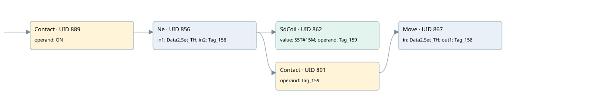

salt system
analog output conversion · 검색 색인 순서 12 · 원본 내부 NID 추정 15
백업 PLF 원본의 3091476 바이트 위치에서 복원한 XML. 검색 문서 1690의 객체 키 16102200b066000000000000와 연결했다. 이름 해석 8/8개. 남은 RefId는 상수 또는 미해석 참조다.
연결 구조 다시 그리기
원본 Part/PCon/Wire를 이용한 연결도다. TIA 화면의 래더 배치 또는 실행 결과를 재현한 그림은 아니다. 핀 연결은 아래 표와 원본 XML을 기준으로 읽는다. 노드 위에 마우스를 두면 피연산자 이름을 볼 수 있다.

접점·코일·블록과 피연산자
| Part UID | Gate | Negated 핀 | 연결 피연산자 |
|---|---|---|---|
| 889 | Contact | operand = ON | |
| 856 | Ne | in1 = Data2.Set_TH; in2 = Tag_158 | |
| 862 | SdCoil | value = S5T#15M; operand = Tag_159 | |
| 891 | Contact | operand = Tag_159 | |
| 867 | Move | in = Data2.Set_TH; out1 = Tag_158 |
접점 경로를 펼친 조건식
Contact·O/A·비교기의 원본 연결을 읽기 쉽게 펼친 보조 해석이다. POWER는 전원 레일 시작을 뜻한다. 호출 블록·에지·타이머의 내부 동작과 다중 쓰기 순서는 이 표로 실행 검증하지 않았다. 미해석 핀과 RefId는 원문 연결표에서 확인한다.
| UID | 동작 | 대상 | 원본 접점 경로 | 내용 |
|---|---|---|---|---|
| 862 | SdCoil | Tag_159 | (ON AND [Data2.Set_TH != Tag_158]) | 시간 동작 SdCoil; 타이머 의미 추가 확인 / 시간 인자 S5T#15M |
| 867 | Move | Tag_158 | ((ON AND [Data2.Set_TH != Tag_158]) AND Tag_159) | Move 입력 Data2.Set_TH |
원본 배선 연결
| Wire UID | 동일 Wire 연결 끝점 |
|---|---|
| 893 | Powerrail {} ↔ Part 889.in |
| 878 | ORef 870 (ON) ↔ Part 889.operand |
| 890 | Part 889.out ↔ Part 856.pre |
| 879 | ORef 871 (Data2.Set_TH) ↔ Part 856.in1 |
| 880 | ORef 872 (Tag_158) ↔ Part 856.in2 |
| 881 | Part 856.out ↔ Part 862.in ↔ Part 891.in |
| 882 | ORef 873 (S5T#15M) ↔ Part 862.value |
| 883 | ORef 874 (Tag_159) ↔ Part 862.operand |
| 884 | ORef 875 (Tag_159) ↔ Part 891.operand |
| 892 | Part 891.out ↔ Part 867.en |
| 886 | ORef 876 (Data2.Set_TH) ↔ Part 867.in |
| 887 | Part 867.out1 ↔ ORef 877 (Tag_158) |
식별자 해석 근거 8개
| ORef UID | RefId | 이름 | IdentXmlPart 파일 | 해석 방법 |
|---|---|---|---|---|
| 870 | 1 | ON | 0664-IdentXmlPart.xml | UID/RID + search-text + NID agreement |
| 871 | 4 | Data2.Set_TH | 0662-IdentXmlPart.xml | UID/RID + search-text + NID agreement |
| 872 | 93 | Tag_158 | 0664-IdentXmlPart.xml | UID/RID + search-text + NID agreement |
| 874 | 96 | Tag_159 | 0664-IdentXmlPart.xml | UID/RID + search-text + NID agreement |
| 873 | 95 | S5T#15M | 0661-IdentXmlPart.xml | literal candidate: UID/RID/NID + nearby named declarations + search-text agreement |
| 875 | 96 | Tag_159 | 0664-IdentXmlPart.xml | UID/RID + search-text + NID agreement |
| 876 | 4 | Data2.Set_TH | 0662-IdentXmlPart.xml | UID/RID + search-text + NID agreement |
| 877 | 93 | Tag_158 | 0664-IdentXmlPart.xml | UID/RID + search-text + NID agreement |
검색 코드 보조 자료
참조 명칭을 찾기 위한 자료이며 실행 순서나 AND/OR 관계는 위 연결표로 확인한다.
"on" "data2".set_th "tag_158" "tag_159" s5t#15m "tag_159" move "data2".set_th "tag_158"